Blender 5.2 LTS / Geometry Nodes / EEVEE / BGM 131 BPM
001〜004 の球が BGM の拍にぴったりで、波・輪・奥行きの流れをつくります。点け方は GN が拍から計算するので、キーは「どの小節でどの動きか」だけ打てばOK。
Result / 到達点
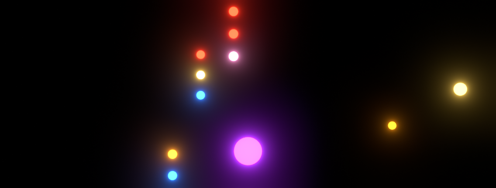
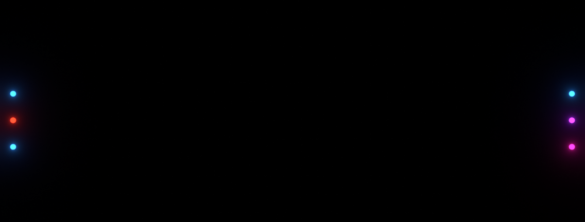
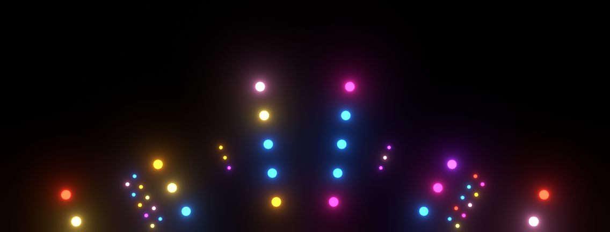
音は「今いるフレーム」から置かれます。
スペースで再生して音が鳴れば OK。エディタは元（3D ビューなど）に戻して大丈夫。
まだ何も出ていなくて正解。
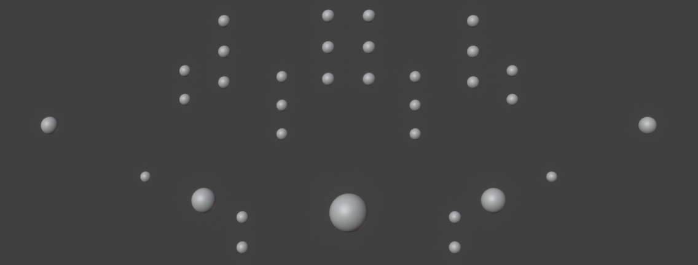
元の場所に球が戻ってくれば OK。（元のコレクションは消してあるので、出ているのは GN の球）
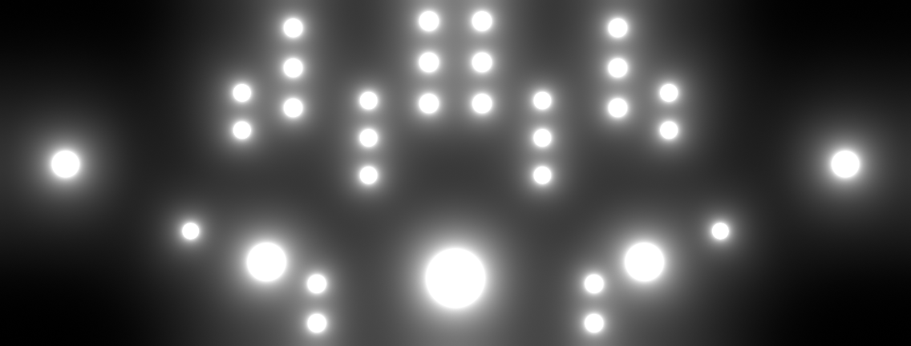
全部の球が白く光れば OK。値 1 と 白 は仮。03 以降で差し替えます。
BGM を鳴らして再生 → ドン・ドン・ドンに合わせて全部がパチッと点けば OK。
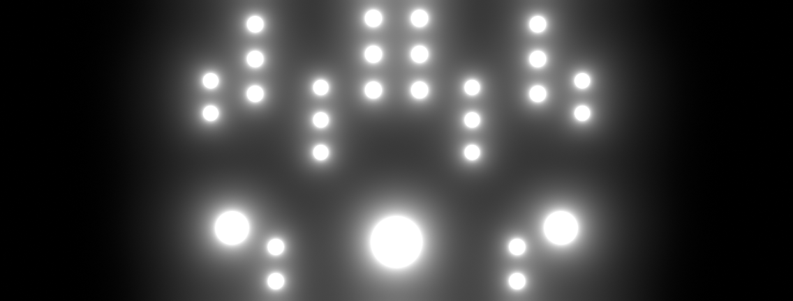
拍の頭で真ん中から点き、外へ流れれば OK。配り方ミックスを 1 にすると 下 → 上 に変わる。
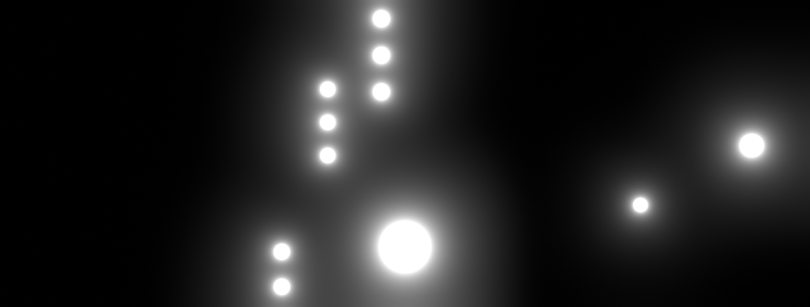
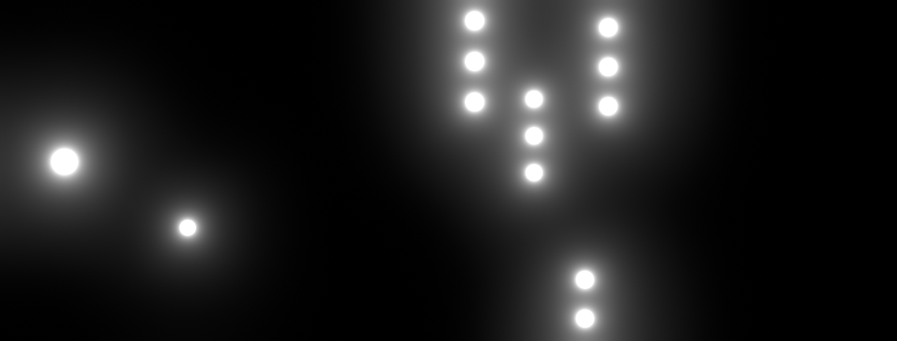
左 → 次の拍で右、とジグザグに点けば OK。
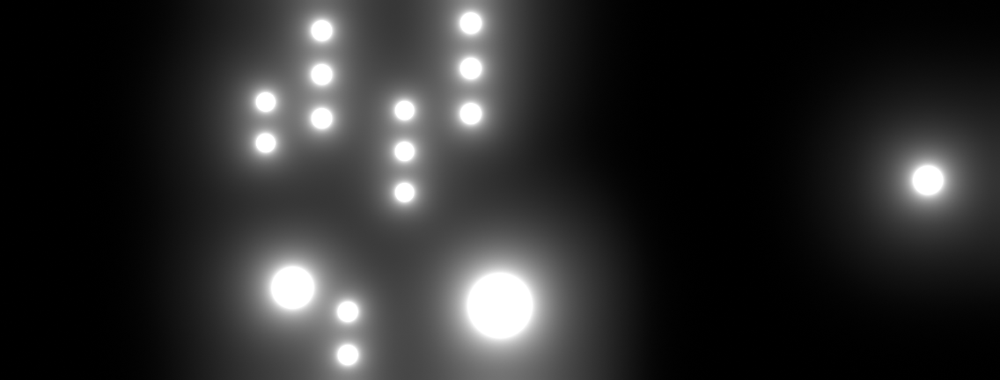
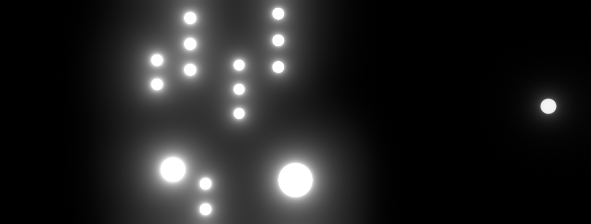
余韻 1 で、流れのしっぽが暗くなれば OK。
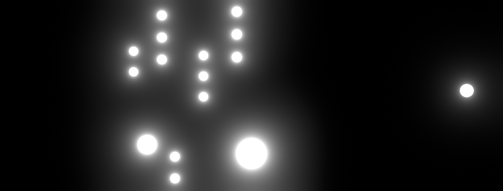
マスター 0 で真っ暗、フラッシュ 1 で全灯になれば OK。
| 位置 | 色 | R | G | B |
|---|---|---|---|---|
| 0.000 | 赤 | 1 | 0.03 | 0.01 |
| 0.125 | アンバー | 1 | 0.32 | 0.01 |
| 0.250 | 金 | 1 | 0.62 | 0.1 |
| 0.375 | マゼンタ | 1 | 0.02 | 0.45 |
| 0.500 | 紫 | 0.45 | 0.03 | 1 |
| 0.625 | 青 | 0.02 | 0.2 | 1 |
| 0.750 | 空色 | 0.03 | 0.28 | 1 |
| 0.875 | ピンク | 1 | 0.3 | 0.62 |
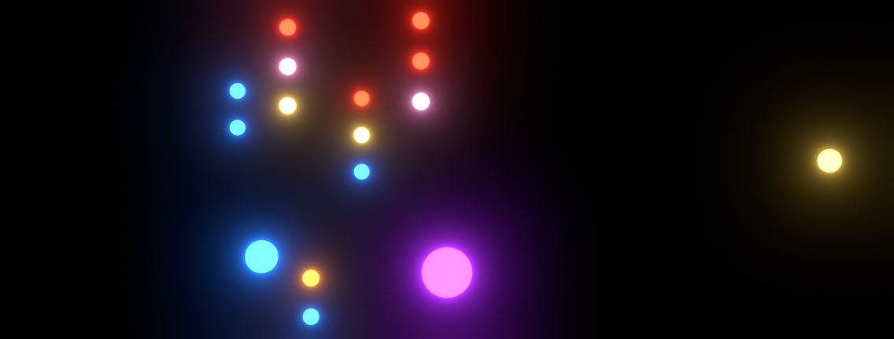
球ごとに色が違えば OK。緑は入れていません。
ふくらみを 0.5 にして、点いた球が大きくなれば OK。確かめたら 0 に戻す。
タイムラインを表のフレームへ → モディファイアのスライダーに値を打つ → スライダーにマウスを乗せて I。
1 行 ＝ 同じフレームで 9 個のスライダーにキー（変わっていない値も打つ）。
| 小節・拍 | フレーム | 音の位置 | 速さ | 広がり | 左右ずれ | 配り方ミックス | 点灯幅 | 余韻 | 奥行き減光 | ふくらみ | マスター | メモ |
|---|---|---|---|---|---|---|---|---|---|---|---|---|
| 18 | 991 | 0:33.03 | 2 | 0 | 0.5 | 0 | 0.5 | 0 | 0 | 0 | 1 | ルック Z0 |
| 18・4.5拍 | 1039 | 0:34.63 | – | – | – | – | – | – | – | – | 0 | 消す |
| 19 | 1046 | 0:34.87 | 0.5 | 0.35 | 0.5 | 0 | 0.4 | 0.4 | 0.2 | 0 | 1 | ルック Z1 |
| 21 | 1156 | 0:38.53 | 0.5 | 0.35 | 0.5 | 1 | 0.4 | 0.4 | 0.2 | 0 | 1 | ルック Z1 |
| 23 | 1265 | 0:42.17 | 1 | 0.3 | 0.5 | 0.3 | 0.35 | 0 | 0 | 0 | 1 | ルック Z2 |
| 25 | 1375 | 0:45.83 | 0.5 | -0.35 | 0.5 | 0.5 | 0.4 | 0.4 | 0.2 | 0 | 1 | ルック Z1 |
| 26・3拍 | 1458 | 0:48.60 | 2 | 0 | 0.5 | 0 | 0.5 | 0 | 0 | 0 | 1 | ルック Z0 |
| 27 | 1485 | 0:49.50 | 0.25 | 0.35 | 0.5 | 0 | 0.6 | 0.8 | 0.2 | 0 | 0.8 | ルック Z1 |
| 28 | 1540 | 0:51.33 | – | – | – | – | – | – | – | – | 0 | 消す |
フラッシュ（3 つ 1 組。真ん中のキーだけ補間を「リニア」）：
BGM を鳴らして 991〜1540 を再生。ドロップ（1046）でフラッシュ → ジグザグ。
| 小節・拍 | フレーム | 音の位置 | 速さ | 広がり | 左右ずれ | 配り方ミックス | 点灯幅 | 余韻 | 奥行き減光 | ふくらみ | マスター | メモ |
|---|---|---|---|---|---|---|---|---|---|---|---|---|
| 26 | 1430 | 0:47.67 | 1 | 0.6 | 0 | 0.5 | 0.3 | 1 | 0.6 | 0.3 | 0.9 | ルック P2 |
| 27 | 1485 | 0:49.50 | 0.5 | -0.8 | 0 | 0 | 0.25 | 0.2 | 0.6 | 0.5 | 1 | ルック P3 |
| 29 | 1595 | 0:53.17 | 0.5 | 0.6 | 0 | 0.5 | 0.3 | 1 | 0.6 | 0.3 | 1 | ルック P2 |
| 31 | 1705 | 0:56.83 | 1 | -0.8 | 0 | 0.3 | 0.25 | 0.2 | 0.6 | 0.5 | 1 | ルック P3 |
| 33 | 1815 | 1:00.50 | 0.25 | 0.5 | 0 | 1 | 0.35 | 1 | 0.6 | 0.25 | 1 | ルック P1 |
| 34 | 1870 | 1:02.33 | 0.5 | 0.6 | 0 | 1 | 0.3 | 1 | 0.6 | 0.3 | 0.7 | ルック P2 |
| 34・4.5拍 | 1918 | 1:03.93 | – | – | – | – | – | – | – | – | 0 | 消す |
| 35 | 1925 | 1:04.17 | 1 | -0.8 | 0 | 0 | 0.25 | 0.2 | 0.6 | 0.5 | 1 | ルック P3 |
| 36 | 1980 | 1:06.00 | – | – | – | – | – | – | – | – | 0 | 消す |
フラッシュ（3 つ 1 組。真ん中のキーだけ補間を「リニア」）：
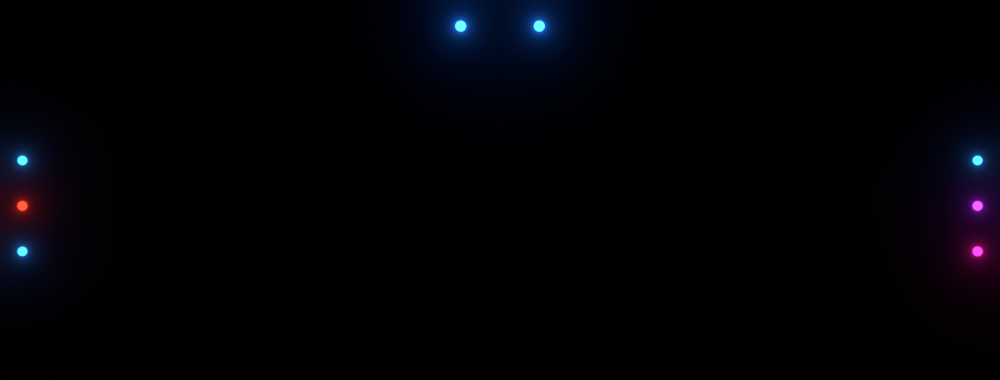
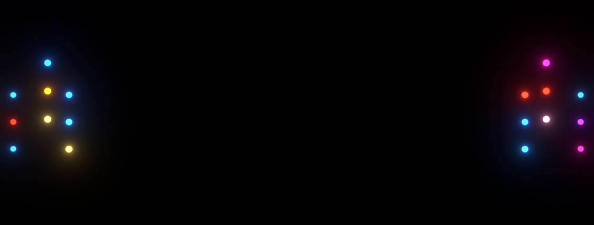
| 小節・拍 | フレーム | 音の位置 | 速さ | 広がり | 左右ずれ | 配り方ミックス | 点灯幅 | 余韻 | 奥行き減光 | ふくらみ | マスター | メモ |
|---|---|---|---|---|---|---|---|---|---|---|---|---|
| 34 | 1870 | 1:02.33 | 1 | 0.7 | 0 | 1 | 0.35 | 0.7 | 0.2 | 0 | 0.8 | ルック D2 |
| 34・3拍 | 1898 | 1:03.27 | 2 | 0.7 | 0 | 1 | 0.35 | 0.7 | 0.2 | 0 | 1 | ルック D2 |
| 34・4.5拍 | 1918 | 1:03.93 | – | – | – | – | – | – | – | – | 0 | 消す |
| 35 | 1925 | 1:04.17 | 1 | -0.7 | 0 | 0 | 0.25 | 0.6 | 0.5 | 0.35 | 1 | ルック D1 |
| 37 | 2035 | 1:07.83 | 1 | -0.6 | 0 | 0.5 | 0.3 | 0.5 | 0.4 | 0.35 | 1 | ルック D3 |
| 39 | 2145 | 1:11.50 | 1 | 0.7 | 0 | 1 | 0.35 | 0.7 | 0.2 | 0 | 1 | ルック D2 |
| 41 | 2255 | 1:15.17 | 2 | -0.7 | 0 | 0.3 | 0.2 | 0.6 | 0.5 | 0.35 | 1 | ルック D1 |
| 43 | 2365 | 1:18.83 | 0.25 | -0.7 | 0 | 0 | 0.4 | 0.9 | 0.5 | 0.35 | 0.6 | ルック D1 |
| 45 | 2475 | 1:22.50 | 1 | -0.6 | 0 | 0.5 | 0.3 | 0.5 | 0.4 | 0.35 | 1 | ルック D3 |
| 46 | 2530 | 1:24.33 | – | – | – | – | – | – | – | – | 0 | 消す |
フラッシュ（3 つ 1 組。真ん中のキーだけ補間を「リニア」）：
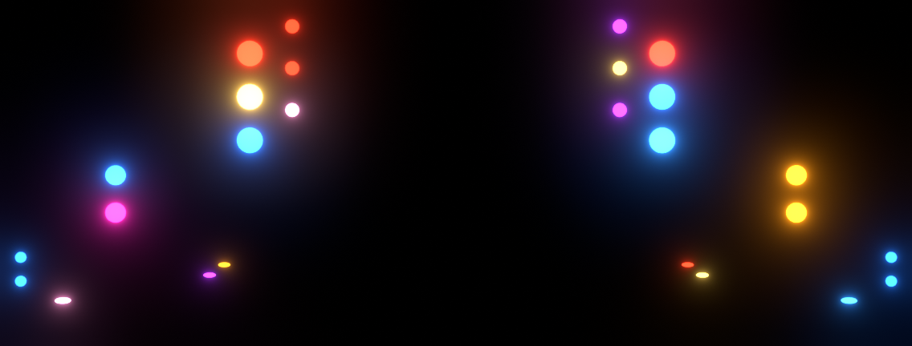
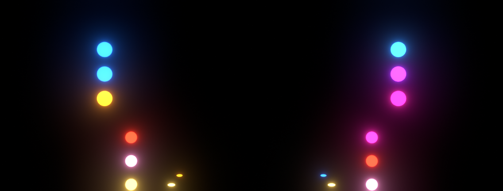
| 小節・拍 | フレーム | 音の位置 | 速さ | 広がり | 左右ずれ | 配り方ミックス | 点灯幅 | 余韻 | 奥行き減光 | ふくらみ | マスター | メモ |
|---|---|---|---|---|---|---|---|---|---|---|---|---|
| 44 | 2420 | 1:20.67 | 0.25 | 0.8 | 0 | 1 | 0.18 | 0.5 | 0 | 0 | 0.6 | ルック F1 |
| 45 | 2475 | 1:22.50 | 1 | 0.6 | 0 | 0 | 0.35 | 0.5 | 0.3 | 0 | 1 | ルック V1 |
| 47 | 2585 | 1:26.17 | 0.5 | 0.8 | 0 | 1 | 0.18 | 0.5 | 0 | 0 | 1 | ルック F1／小節ごとに 広がり の ± を反転：2639→-0.8 |
| 49 | 2694 | 1:29.80 | 2 | 0.6 | 0 | 0.3 | 0.25 | 0.5 | 0.3 | 0 | 1 | ルック V1 |
| 50 | 2749 | 1:31.63 | 1 | 0.8 | 0 | 1 | 0.18 | 0.5 | 0 | 0 | 1 | ルック F1／小節ごとに 広がり の ± を反転： |
| 51 | 2804 | 1:33.47 | 0.25 | 0.8 | 0 | 1 | 0.18 | 0.5 | 0 | 0 | 0.6 | ルック F1／小節ごとに 広がり の ± を反転： |
| 52 | 2859 | 1:35.30 | – | – | – | – | – | – | – | – | 0 | 消す |
フラッシュ（3 つ 1 組。真ん中のキーだけ補間を「リニア」）：
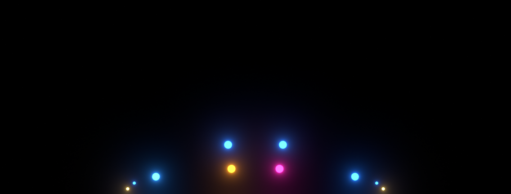
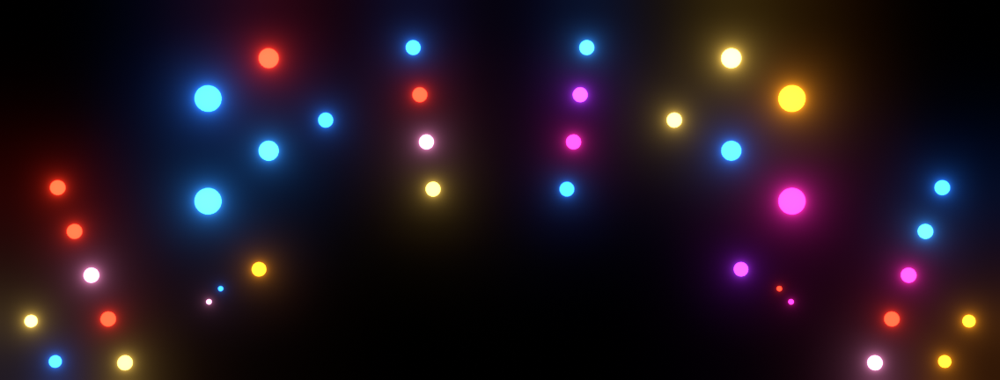
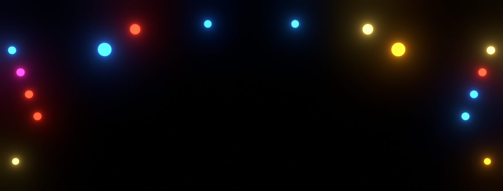